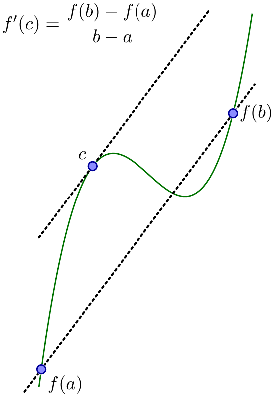
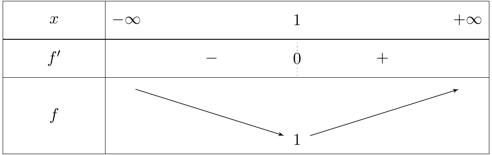
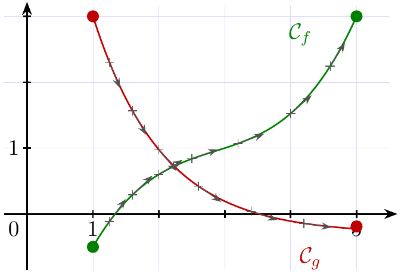
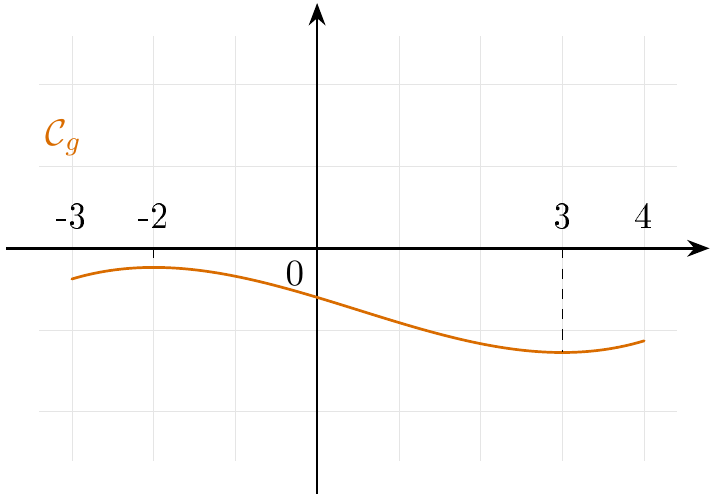
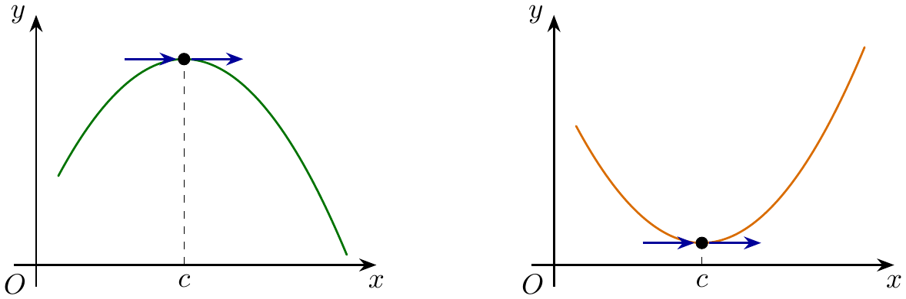

Chapitre 9 : Application de la dérivation
Première spécialité · Chapitre 8 — Application de la dérivation · cours de Frederik de Peyrelongue
I. Rappel
Le nombre dérivé $f'(a)$ de la fonction $f$ en un point $M\bigl(a\,;f(a)\bigr)$ correspond à la pente de la tangente à la courbe au point $M$.
Équation de la tangente au point $A\bigl(a\,;f(a)\bigr)$ :
Les fonctions dérivées de référence
| Fonction $f$ définie par : | Ensemble de définition $\mathcal{D}_{f}$ | Fonction dérivée $f'$ définie par : | Ensemble de dérivabilité $\mathcal{D}_{f'}$ | |
| 1. | $f(x)=k$, avec $k\in\R$ | $\R$ | $f'(x)=0$ | $\R$ |
| 2. | $f(x)=mx+p$, avec $m$ et $p$ réels | $\R$ | $f'(x)=m$ | $\R$ |
| 3. | $f(x)=x^{2}$ | $\R$ | $f'(x)=2x$ | $\R$ |
| 4. | $f(x)=x^{n}$, avec $n\in\N^{*}$ | $\R$ | $f'(x)=nx^{n-1}$ | $\R$ |
| 5. | $f(x)=\dfrac{1}{x}$ | $\R\setminus\{0\}$ | $f'(x)=-\dfrac{1}{x^{2}}$ | $\R\setminus\{0\}$ |
| 6. | $f(x)=\dfrac{1}{x^{n}}$ avec $n\in\N^{*}$ | $\R\setminus\{0\}$ | $f'(x)=-\dfrac{n}{x^{n+1}}$ | $\R\setminus\{0\}$ |
| 7. | $f(x)=\sqrt{x}$ | $[0\,;+\infty[$ | $f'(x)=\dfrac{1}{2\sqrt{x}}$ | $]0\,;+\infty[$ |
Opérations sur les fonctions dérivées : somme, produit, quotient, fonction composée
| Type d'opération | Fonction à dériver | Fonction dérivée | |
| 1. | Dérivée d'une somme | $u+v$ | $(u+v)'=u'+v'$ |
| 2. | Dérivée d'un produit par une constante | $k\times u$ | $(k\times u)'=k\times u'$ |
| 3. | Dérivée d'un produit | $u\times v$ | $(u\times v)'=u'\times v+u\times v'$ |
| 4. | Dérivée d'un inverse | $\dfrac{1}{v}$ avec $v(x)\neq 0$ pour tout $x\in I$ | $\left(\dfrac{1}{v}\right)'=\dfrac{-v'}{v^{2}}$ |
| 5. | Dérivée d'un quotient | $\dfrac{u}{v}$ avec $v(x)\neq 0$ pour tout $x\in I$ | $\left(\dfrac{u}{v}\right)'=\dfrac{u'\times v-u\times v'}{v^{2}}$ |
| 6. | Dérivée de $f(x)=g(ax+b)$, avec $a\neq 0$ : soit $I$ l'intervalle tel que, pour tout $x\in I$, $ax+b\in J$. La fonction $f$ est définie et dérivable sur $J$ et $f'(x)=a\times g'(ax+b)$. |
II. Lien entre le signe de la dérivée et sens de variation
Soit $f$ une fonction dérivable sur un intervalle $I$ et $f'$ la fonction dérivée de $f$.
- Si $f'(x)>0$ $\forall x\in I$ (respectivement $f'(x)\geqslant 0$) sur $I$, alors $f$ est strictement croissante sur $I$ (respectivement croissante sur $I$).
- Si $f'(x)<0$ $\forall x\in I$ sur $I$, alors $f$ est strictement décroissante sur $I$.
- Si $f'(x)=0$ $\forall x\in I$ sur $I$, alors $f$ est constante sur $I$.
Soit $f$ une fonction dérivable sur un intervalle $I$ et $f'$ la fonction dérivée de $f$ ; pour tous réels $a$ et $b$ de $I$, il existe un réel $c\in\left]a\,;b\right[$ tel que
« Géométriquement, cela signifie qu'il existe une tangente à un point d'abscisse $c\in\left]a\,;b\right[$ telle que cette tangente soit parallèle à la sécante entre les points d'abscisse $a$ et $b$. »

Preuve du théorème 1 : 1er cas $f'(x)>0$ $\forall x\in I$.
Soient $a$ et $b$ deux réels quelconques de $I$ tels que $a<b$ ($b-a>0$).
Il existe donc un réel $c\in\left]a\,;b\right[$ tel que $f'(c)=\dfrac{f(b)-f(a)}{b-a}$.
Puisque $f'$ est positive, alors $f'(c)=\dfrac{f(b)-f(a)}{b-a}>0$, donc $f(b)-f(a)>0$ et ainsi $f(a)<f(b)$ : la fonction $f$ est bien strictement croissante.
On raisonne de façon analogue pour les deux autres points.
$f$ est la fonction définie sur $\R$ par $f(x)=5x^{5}$.
$f$ est dérivable sur $\R$ et $f'(x)=5\times 5x^{4}=25x^{4}\geqslant 0$.
$f'$ s'annule uniquement en $0$ et est strictement positive pour tout $x\neq 0$, donc $f$ est strictement croissante sur $\R$.
III. Tableau de variation
Définition
C'est un tableau en trois lignes :
- la première représente les valeurs de la variable $x$ ;
- la seconde, le signe de la dérivée $f'(x)$ ;
- et la troisième, les variations de $f(x)$.
Toutes les valeurs de $x$ pour lesquelles $f'(x)$ change de signe doivent bien sûr y figurer, puisque la flèche change de sens pour $f(x)$ en passant par ces valeurs. On peut rajouter quelques valeurs particulières de $x$ et de $f(x)$, par exemple les solutions de $f(x)=0$.
$f(x)=x^{2}-2x+2$.
$f$ est définie sur $\R$.
$f'(x)=2x-2$ : c'est une fonction affine, son coefficient directeur est égal à $2>0$.

Méthode
Pour étudier les variations d'une fonction sur son ensemble de définition :
- on justifie qu'elle est dérivable ;
- on détermine sa dérivée ;
- on étudie le signe de la dérivée ;
- on en déduit le sens de variation de la fonction.
IV. Du sens de variation au signe de la dérivée
Soit $f$ une fonction dérivable sur un intervalle $I$ et $f'$ la fonction dérivée de $f$.
- Si $f$ est croissante sur $I$, alors $f'$ est positive sur $I$.
- Si $f$ est décroissante sur $I$, alors $f'$ est négative sur $I$.
- Si $f$ est constante sur $I$, alors $f'$ est nulle sur $I$.
Soit $f$ une fonction dérivable sur un intervalle $I$ et $f'$ la fonction dérivée de $f$. Soit $h>0$ tel que $x+h\in I$. Pour tout $x\in I$,
Si $f$ est croissante, alors, pour tout $x\in I$, $f(x+h)\geqslant f(x)$, donc $f(x+h)-f(x)\geqslant 0$, donc $f'(x)\geqslant 0$.
Si $f$ est décroissante, alors, pour tout $x\in I$, $f(x+h)\leqslant f(x)$, donc $f(x+h)-f(x)\leqslant 0$, donc $f'(x)\leqslant 0$.
Si $f$ est constante sur $I$, alors, pour tout $x\in I$, $f(x+h)=f(x)$, donc $f(x+h)-f(x)=0$, donc $f'(x)=0$.
$\mathcal{C}_{f}$ et $\mathcal{C}_{g}$ représentent respectivement une fonction $f$ et $g$, chacune définie et dérivable sur l'intervalle $I=[1\,;5]$.
Toutes les tangentes à $\mathcal{C}_{f}$ sur $I$ ont un coefficient directeur positif, car $f$ est croissante : on en déduit que $f'$ est positive sur $I$.
Celles à $\mathcal{C}_{g}$ ont un coefficient directeur négatif, car $g$ est décroissante : on en déduit que $g'$ est négative sur $I$.

$\mathcal{C}_{g}$ est la courbe représentative d'une fonction $g$ définie et dérivable sur $[-3\,;4]$. Donner graphiquement, suivant les valeurs de $x$, le signe de $g'(x)$.
$g$ est croissante sur $[-3\,;-2]$ et sur $[3\,;4]$, donc $g'$ est positive sur $[-3\,;-2]$ et sur $[3\,;4]$. $g$ est décroissante sur $[-2\,;3]$, donc $g'$ est négative sur $[-2\,;3]$.

Méthode
Pour déterminer le signe de la dérivée à partir du sens de variation :
1. on détermine les intervalles sur lesquels la fonction est croissante et les intervalles sur lesquels elle est décroissante ;
2. si la fonction est croissante (respectivement décroissante), alors la dérivée est positive (respectivement négative).
V. Extremum local et dérivée
Soient $I$ un intervalle ouvert et $c$ un réel de $I$. On considère une fonction $f$ définie sur $I$. Dire que $f(c)$ est un maximum local (respectivement minimum local) de $f$ au voisinage de $c$ signifie qu'il existe deux réels $a$ et $b$ dans $I$ tels que $c\in\left]a\,;b\right[$ et, pour tout réel $x$ de $\left[a\,;b\right]$, $f(x)\leqslant f(c)$ (respectivement $f(x)\geqslant f(c)$).
Un extremum local est un maximum ou un minimum local.
Soient $f$ une fonction dérivable sur un intervalle ouvert $I$ et $x_{0}$ un réel de $I$. Si $f(x_{0})$ est un extremum local sur l'intervalle $I=\left]a\,;b\right[$, alors
Soient $f$ une fonction dérivable sur un intervalle ouvert $I$ et $x_{0}$ un réel de $I$. Si $f'$ s'annule en $x_{0}$ et change de signe, alors $x_{0}$ est un extremum local.
La courbe $\mathcal{C}$ représentative de la fonction $f$ admet une tangente horizontale au point $\bigl(x_{0}\,;f(x_{0})\bigr)$.

VI. Nombre de solutions de l'équation $f(x)=k$
Déterminer le nombre de solutions de l'équation $f(x)=k$ revient à rechercher dans le tableau de variation le nombre de fois où la fonction prend la valeur $k$.
Soit $f$ une fonction strictement monotone et continue sur $[a\,;b]$.
- Si $k$ est compris entre $f(a)$ et $f(b)$, alors l'équation $f(x)=k$ a une solution unique dans $[a\,;b]$.
- Sinon, l'équation n'a pas de solution dans cet intervalle.